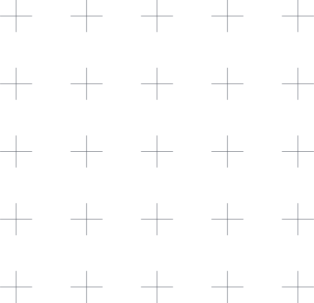
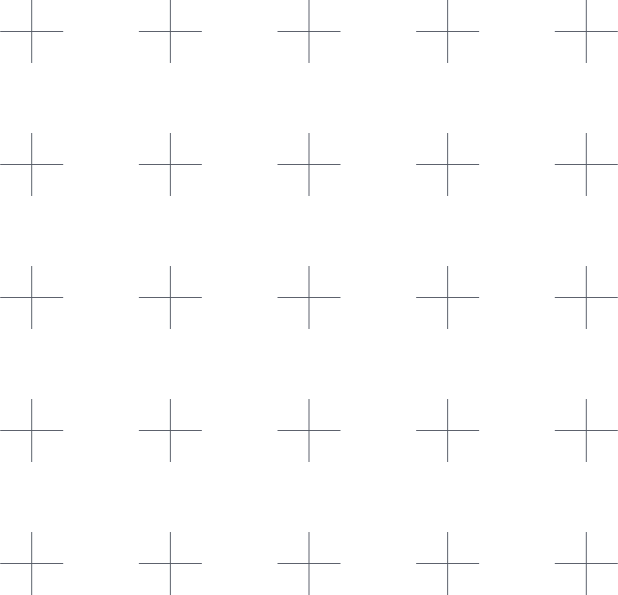

Residências artísticas inseridas no programa do Festival de Arte Digital da Trafaria 2024
Nesta residência procuramos juntar o que parece dividido, combinando experiências de arte e tecnologia, de modo a refletir sobre os processos de concepção, encontrar métodos de trabalho, ter impacto local e visibilidade global. A história da arte também é uma história de tecnologias e essas tecnologias permitem novas manifestações artísticas. Pretendemos explorar o diálogo entre Arte e Tecnologia, promovendo a criação e desenvolvimento de propostas artísticas diferenciadas que problematizam e explorem a relação entre a sociedade, o indivíduo, a arte e a tecnologia.
Os participantes devem procurar colaborações internas e externas, indo além dos seus interesses e experiência anterior, identificando temas locais importantes, que serão naturalmente relevantes em outras geografias. Enquanto algumas criações tecnológicas têm aplicações práticas imediatas, a arte pode transcender essa necessidade. A arte pode provocar surpresa, reflexão e abrir novas perspetivas.
Residência
Convidam-se recém-licenciados e mestres, doutorandos e outros estudantes de arte, estudos artísticos, media digitais, design, engenharia informática, eletrotécnica, mecânica, ou áreas afins, para participar nesta residência. Podem também candidatar-se participantes com outras formações, desde que tenham experiência artística e/ou tecnológica relevante, por exemplo em performance, computação física, sensores, microprocessadores, imagem, áudio e vídeo.
Oito participantes serão selecionados e receberão uma bolsa de 1000€ para o desenvolvimento e produção de uma proposta artística com componentes tecnológicos. Prevê-se ainda a disponibilização adicional de equipamento para a fase de desenvolvimento e de exposição.
A residência terá lugar na Trafaria, incluindo espaços de trabalho e espaço para exposição e decorre de 7 a 21 de Outubro de 2024.
O trabalho será desenvolvido em regime diurno, mas com flexibilidade, por exemplo para aulas e outros compromissos académicos. Prevê-se a realização de atividades pontuais, incluindo workshops ou cursos curtos durante a realização da residência.
Apresentação
Os participantes devem mostrar os resultados, processos ou protótipos numa apresentação/exposição a realizar no final da residência no Festival de Arte e Tecnologia da Trafaria, de 8 a 10 de novembro de 2024.
Candidaturas
As candidaturas devem ser enviadas por email para trafariacriativa@gmail.com e incluir Portfólio, CV resumido e carta de motivação, até 5 de setembro. Adicionalmente, as candidaturas podem conter uma proposta concreta de projeto em desenvolvimento ou a desenvolver. As propostas não devem apenas usar tecnologia, mas também refletir sobre seu impacto na sociedade e na cultura, especialmente na Trafaria.